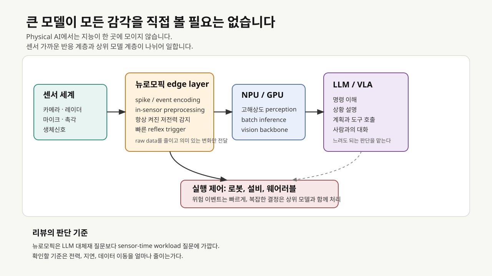
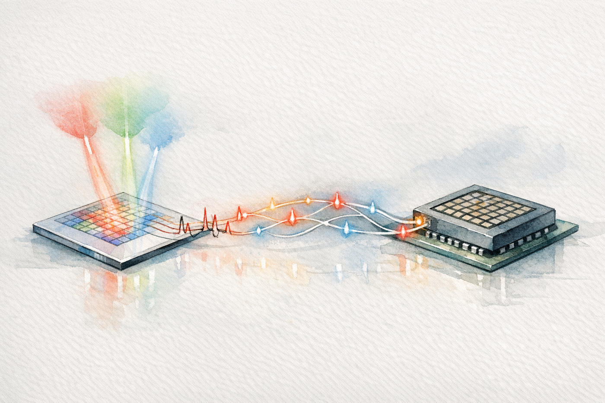
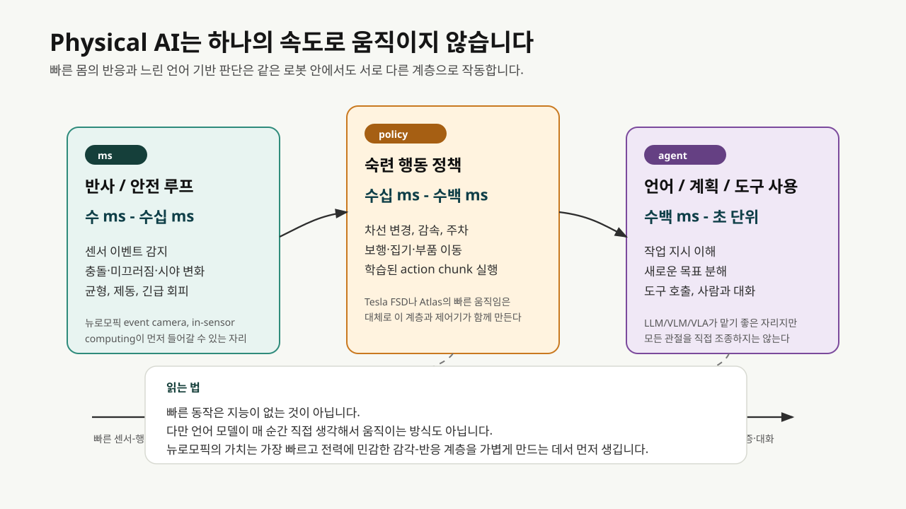
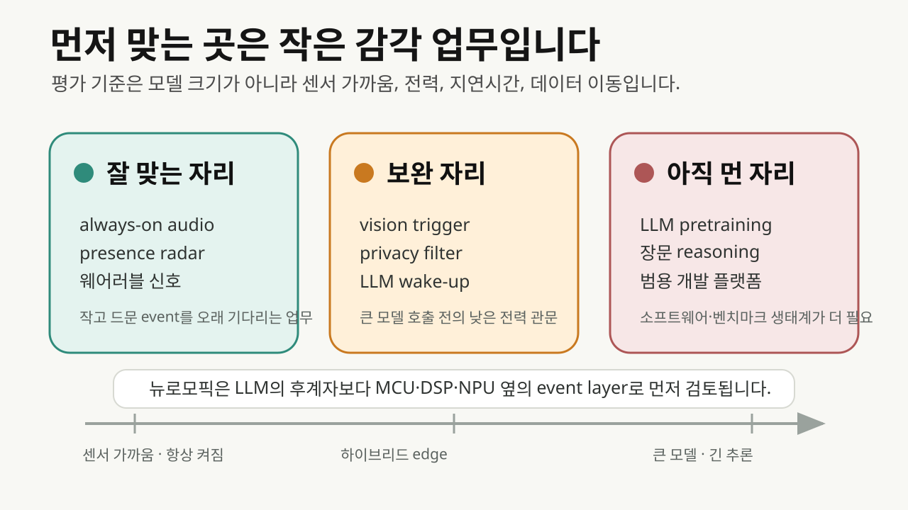
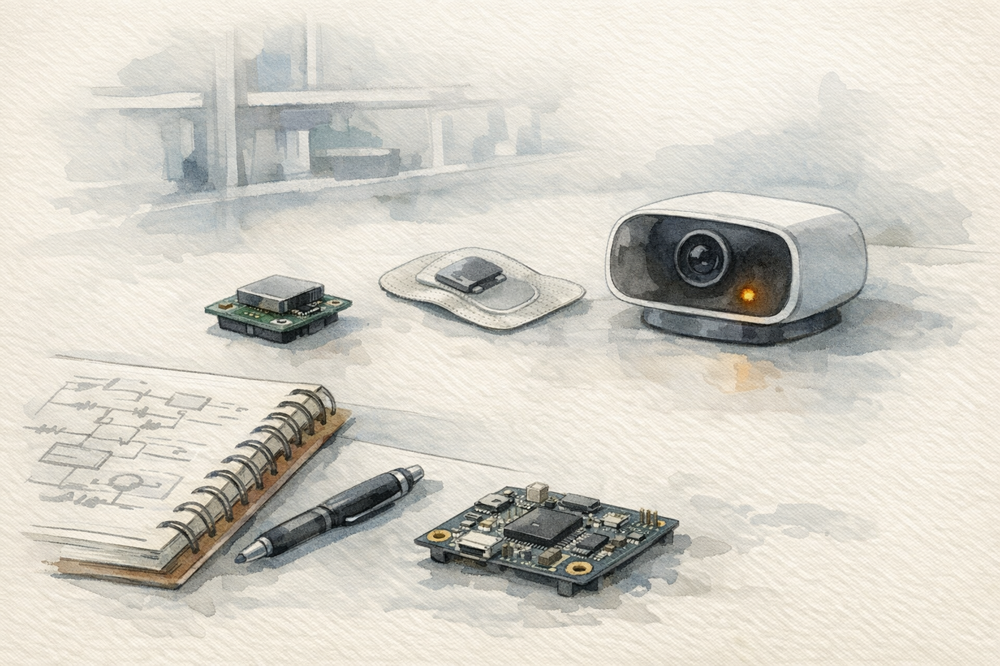

로봇이 복도에서 사람을 피하는 장면을 떠올려 보면 문제가 선명해집니다. 카메라 영상 전체를 저장하고, 네트워크로 보내고, 큰 모델이 장면을 해석한 뒤, 다시 제어 명령을 내려오기를 기다리는 방식은 설명하기는 쉽지만 실제 기계에서는 금방 무거워집니다. 몇 초 늦은 챗봇 답변은 불편한 정도에서 끝날 수 있습니다. 하지만 로봇의 눈과 팔, 자율주행 차량의 레이더, 웨어러블의 생체신호 센서는 전력과 지연에 훨씬 민감합니다.
이 장면에서 뉴로모픽이라는 오래된 단어가 다시 읽힙니다. 뉴로모픽은 뇌의 신경세포와 시냅스가 신호를 다루는 방식을 참고해, 필요한 순간에만 계산하고 메모리와 연산을 가까이 두려는 하드웨어·알고리즘 접근입니다. 이름은 거창하지만 출발점은 의외로 소박합니다. 모든 것을 고해상도 데이터로 보낸 뒤 해석하기보다, 방금 중요한 변화가 생겼는지 센서 가까이에서 먼저 살펴보자는 제안에서 출발합니다.
사이언스타임즈가 2026년 3월 소개한 기사는 이 흐름을 대중 독자에게 끌어온 사례입니다. 기사 제목은 “로봇의 눈이 스스로 생각도 하는 뉴로모픽 비전”입니다. 표현은 조금 과감하지만, 문제의식은 현장의 엔지니어가 실제로 부딪히는 조건과 닿아 있습니다. 로봇의 카메라가 빛을 받은 자리에서 어느 정도 의미 있는 신호를 만들 수 있다면, Physical AI의 반응 시간과 전력 조건은 달라질 여지가 생깁니다.

MoS2 시각 소자
기사에 연결된 논문은 Wang et al.의 Nature Communications 2026 논문입니다. 연구진은 이황화몰리브덴(MoS2) 기반 광트랜지스터를 optoelectronic LIF neuron으로 사용하고, HZO(hafnium-zirconium oxide) 강유전층을 포함한 MoS2 FeFET를 인공 시냅스로 사용했습니다. LIF neuron은 leaky integrate-and-fire neuron의 줄임말입니다. 신호를 조금씩 쌓다가 기준값을 넘으면 spike를 내고 다시 초기화되는 간단한 신경세포 모델입니다.
이 논문에서 흥미로운 대목은 빛 감지, spike 변환, 가중치 저장을 하나의 플랫폼 안에 붙여 보았다는 점입니다. 기존 카메라는 빛을 전기 신호로 바꾼 뒤 그 데이터를 별도 프로세서로 보냅니다. 이 연구의 구조에서는 센서가 빛의 세기와 파장을 받아 spike train을 만들고, 그 spike가 ferroelectric synapse array의 가중합 연산에 입력됩니다. 카메라와 프로세서 사이의 경계를 조금 앞당겨 본 실험으로 해석할 여지가 있습니다.


논문은 두 가지 encoding을 함께 씁니다. 하나는 rate coding입니다. 빛이 강할수록 일정 시간 안에 spike가 더 많이 나옵니다. 다른 하나는 TTFS(time-to-first-spike)입니다. 자극이 강할수록 첫 spike가 더 빨리 나옵니다. 자율주행이나 로봇 안전 감시처럼 갑작스러운 위험을 빨리 잡아야 하는 장면에서는 첫 반응 시간이 설계 변수로 떠오릅니다. 반대로 색상과 패턴을 더 안정적으로 구분하려면 spike 빈도도 쓸 만한 정보가 됩니다.
용어를 조금 더 풀어보겠습니다. Spike는 연속적인 숫자 벡터와 달리 짧은 사건 신호입니다. SNN(spiking neural network)은 이런 사건 신호의 시간 패턴을 다루는 신경망입니다. FeFET(ferroelectric field-effect transistor)는 강유전 물질의 분극 상태를 이용해 전도 상태, 즉 가중치에 해당하는 값을 오래 보존할 수 있는 트랜지스터입니다. 이 논문을 따라가면 “카메라가 사진을 찍고 AI가 나중에 보는 구조”에서 조금 벗어나, 빛이 들어온 자리에서 시간 신호와 가중치 연산의 일부가 이미 시작되는 장면을 볼 수 있습니다.
논문은 이 통합 SNN 시스템이 RGB 색상 인식에서 91.7%, 객체 검출에서 93.5%의 정확도를 얻었다고 보고합니다. 사이언스타임즈 기사의 주요 수치도 여기서 나왔습니다. 다만 이 수치는 실험실 규모의 시스템 검증에서 나온 결과입니다. 곧바로 상용 로봇 카메라의 성능 지표로 옮겨 읽기에는 여백이 큽니다. 논문 본문은 현재 하드웨어 한계 때문에 RGB color classification capability를 simulation으로 검증했다고 밝힙니다. 또한 상용 neuromorphic chip과 비교하면서 optoelectronic fusion과 circuit simplification의 장점은 있지만, system scale과 energy efficiency는 아직 개선 영역이라고 적습니다.
그래서 이 논문은 “로봇의 눈이 곧 사람처럼 생각한다”는 결론보다, 센서와 계산의 경계가 앞으로 어디까지 당겨질 수 있는지 묻는 쪽에 무게가 실립니다.
Physical AI의 시간
Physical AI는 로봇, 자율주행, 산업 설비, 웨어러블처럼 실제 세계와 맞닿아 작동하는 AI를 가리키는 산업 용어로 쓰이고 있습니다. NVIDIA의 2026년 Physical AI Data Factory Blueprint는 로봇, vision AI agent, autonomous vehicle을 위한 데이터 생성·증강·평가 구조를 강조합니다. Qualcomm의 2026년 robotics technology suite도 VLA/VLM, edge AI, humanoid robotics를 Physical AI 스택으로 묶어 설명합니다.
이 자료들을 뉴로모픽 자체의 성능 근거로 쓰기는 어렵습니다. 다만 왜 뉴로모픽이 다시 호출되는지 이해하는 배경으로는 꽤 유용합니다. Physical AI가 실제 제품과 설비로 내려가면, 큰 모델의 지능만으로는 다루기 어려운 문제가 생깁니다. 느리면 부딪히고, 많이 쓰면 배터리가 떨어지고, 계속 보내면 네트워크가 막히고, raw sensor data를 밖으로 내보내면 프라이버시와 보안 부담이 커집니다.
뉴로모픽 연구가 붙는 자리는 대개 이 틈입니다. 입력이 있을 때만 계산하는 event-driven processing, 메모리와 연산을 가까이 두는 compute-memory co-location, 센서 단계에서 feature를 만드는 in-sensor computing은 큰 모델의 언어 추론과 다른 종류의 지능을 겨냥합니다.
npj Unconventional Computing의 2026년 AI-native robotic vision 리뷰는 이 문제를 로봇 시각 관점에서 차분히 설명합니다. 기존 robotic vision system은 image sensor와 processor가 분리되어 있고, raw image는 여러 image signal processing 단계를 지나 외부 processor로 전달됩니다. 이 과정은 지연과 전력 소모를 만듭니다. 반면 in-sensor computing은 feature enhancement, spike encoding, convolutional filtering 같은 연산을 sensory level에서 수행해 AI inference에 맞는 visual data를 바로 만들 수 있습니다.
Communications Engineering의 2025년 robotic vision perspective도 같은 방향을 봅니다. 이 글은 event-based camera, SNN 및 SNN-ANN hybrid, 전용 neuromorphic hardware를 따로 보지 말고 system design 문제로 묶어야 한다고 설명합니다. 드론 시각 항법처럼 전력과 지연이 빠듯한 사례에서는 알고리즘과 하드웨어를 함께 설계해야 합니다. 이 관점으로 읽으면 Physical AI와 뉴로모픽의 연결이 무리한 유행어 결합처럼 보이지 않습니다. 실제 기계가 빨리 보고, 적게 쓰고, 현장에서 판단해야 하므로 두 논의가 자연스럽게 만납니다.
쉽게 말하면, 뉴로모픽은 로봇에게 “모든 장면을 고해상도 영상으로 설명한 뒤 생각하자”고 요구하지 않습니다. 먼저 “방금 무언가 움직였다”, “소리가 특정 패턴으로 바뀌었다”, “이 진동은 평소와 다르다”, “이 빛의 변화는 위험 신호일 수 있다”를 낮은 비용으로 감지하자는 방향에 서 있습니다. 큰 모델은 그 다음 판단을 맡을 수 있습니다.
자율주행차의 시간 감각
테슬라 FSD(Full Self-Driving)를 현재 공개 자료만 놓고 보면 뉴로모픽 사례로 분류하기는 어렵습니다. FSD는 frame-based camera, deep neural network, 차량 내 AI computer, 대규모 fleet data, OTA update를 중심으로 움직입니다. Tesla FSD 페이지는 외부 카메라의 360도 시야, route navigation, steering, lane change, parking을 설명하면서도 현재 기능은 active supervision이 필요하며 차량을 autonomous vehicle로 만들지는 않는다고 적습니다.
그래도 테슬라의 AI stack은 자율주행차가 어떤 순서로 세계를 만들어 가는지 설명하기에 유용합니다. Tesla AI & Robotics 페이지는 per-camera network가 raw image를 받아 semantic segmentation, object detection, monocular depth estimation을 수행하고, birds-eye-view network가 모든 카메라 영상을 모아 road layout, static infrastructure, 3D object를 top-down view로 출력한다고 설명합니다. 그 다음 autonomy algorithm은 이 세계 표현 안에서 trajectory를 계획합니다. 카메라가 본 장면은 곧바로 steering wheel로 가지 않습니다. 먼저 차 주변의 공간 표현으로 바뀌고, 그 위에서 어느 차선으로 갈지, 어느 속도로 줄일지, 어느 방향으로 피할지 계산됩니다.
이 구조에서 순간적인 움직임은 세 층이 동시에 맞물릴 때 나옵니다. 첫째, perception layer가 앞차, 보행자, 차선, 신호, 도로 경계를 계속 갱신합니다. 둘째, planning layer가 가능한 경로와 위험도를 비교합니다. 셋째, control layer가 조향, 제동, 가속 명령으로 바꿉니다. Tesla AI computer support 문서는 이 컴퓨터가 neural network를 빠르게 처리하도록 설계되었다고 설명하지만, 동시에 현재 차량은 완전 자율이 아니며 운전자 감독과 규제 승인이 필요하다고 못박습니다.
여기서 뉴로모픽과 테슬라의 논의가 조심스럽게 만납니다. 테슬라가 현재 쓰는 방식은 뉴로모픽보다 dense visual AI 계열에 놓입니다. 그러나 두 기술이 마주 보는 제약은 상당히 겹칩니다. 카메라 데이터는 많고, 판단은 빨라야 하며, 차 안의 전력과 열은 제한되어 있습니다. 특히 camera-only 전략에서는 센서가 제대로 보지 못하는 순간을 빨리 알아차리는 일을 쉽게 지나칠 수 없습니다. NHTSA가 2026년 3월 연 Engineering Analysis는 Tesla FSD의 reduced roadway visibility 조건, 즉 glare와 airborne obscurants 같은 상황에서 camera degradation을 제때 감지하고 운전자에게 충분히 알리는지 평가하겠다고 밝혔습니다. 이 조사는 테슬라에 대한 최종 판정은 아니지만, 자율주행에서 센서 신뢰도와 즉시 반응을 따로 떼어 생각하기 어렵다는 점을 상기시킵니다.
뉴로모픽 event camera와 SNN은 이 틈에서 보조 계층으로 검토될 수 있습니다. Nature의 2024년 event camera 논문은 자동차 vision에서 RGB frame camera가 bandwidth-latency trade-off를 만든다고 보고, event camera가 밝기 변화만 비동기적으로 기록해 temporal resolution과 sparsity를 높일 수 있다고 설명합니다. IEEE Signal Processing Magazine의 autonomous driving 리뷰도 event-based neuromorphic vision이 낮은 지연, 높은 dynamic range, motion blur 감소에서 장점을 가진다고 정리합니다.
다만 이것이 “테슬라에 뉴로모픽이 곧장 필요하다”는 뜻은 아닙니다. 테슬라는 현재 더 큰 fleet data, end-to-end learning, AI inference chip, simulation/evaluation infrastructure로 문제를 풀어 가고 있습니다. 뉴로모픽이 들어간다면, 전체 FSD brain을 대체하기보다 급격한 움직임, glare/tunnel 전환, parking lot 주변 움직임, 낮은 전력의 always-on monitoring 같은 peripheral reflex layer에서 먼저 논의될 여지가 있습니다. 자율주행차는 뉴로모픽의 필요성을 곧장 증명해 주지는 않습니다. 대신 어느 계층에 넣어야 실제 가치가 생기는지 따져볼 수 있는 현실적인 검토 테이블을 제공합니다.
빠른 몸과 느린 판단
이때 자주 생기는 착시가 있습니다. 자동차가 수 ms 단위로 주변을 보고, 로봇이 계단을 오르고, Atlas가 덤블링이나 춤처럼 매우 빠른 동작을 보여주면 기계가 사람처럼 그 순간마다 생각하고 결정하는 것처럼 보입니다. 공개 자료와 로봇 제어 문헌을 같이 보면 이야기는 더 층위적입니다. 빠른 움직임의 상당 부분은 운전, 보행, 균형, 물체 조작에 맞게 학습되거나 설계된 sensorimotor policy와 제어기의 결과입니다. 언어로 새 목표를 이해하고, 작업을 나누고, 도구를 호출하고, 사람에게 이유를 설명하는 agentic layer와는 다른 층입니다.
그래서 “LLM이 로봇에 들어가면 모든 동작이 느려질 수밖에 없다”는 우려는 절반쯤 받아들이는 편이 좋겠습니다. LLM/VLM/VLA가 모든 관절과 모터를 직접 조종한다면 현실적인 제어 루프가 되기 어렵습니다. 하지만 실제 Physical AI 시스템은 보통 계층형으로 구성됩니다. 균형 유지, 충돌 회피, 제동, 미끄러짐 감지는 매우 빠른 하위 루프가 맡고, 차선 변경이나 물체 집기 같은 숙련 행동은 학습된 policy가 맡습니다. LLM/VLM/VLA는 그 위에서 “무엇을 하라”는 지시를 이해하고, 장면을 설명하고, 작업 순서를 세우고, 필요하면 도구나 업무 시스템을 호출합니다. 느린 판단이 빠른 몸을 매 순간 대신 움직이기보다, 빠른 행동 계층을 선택하고 제약하는 흐름입니다.
Boston Dynamics가 2026년 공개한 Atlas 관련 글도 이 차이를 읽어 볼 만한 자료입니다. 회사는 Atlas가 전기식 산업용 humanoid로 전환되고, Hyundai와 Google DeepMind 배치가 예정되어 있으며, fleet 규모에서 learned behavior를 재배포하고 RL과 foundation model을 활용한다고 설명합니다. 동시에 첫 산업 과제는 자동차 제조의 part sequencing처럼 구체적인 작업입니다. 여기서 보이는 변화는 사람 같은 자유의지라기보다, 산업 현장에서 반복 가능한 작업을 학습·검증·배포하는 능력이 커지는 흐름입니다.
Boston Dynamics와 Toyota Research Institute의 Large Behavior Models 글은 더 직접적인 단서를 줍니다. 공개 설명에 따르면 Atlas 정책은 이미지, proprioception, 언어 prompt를 입력으로 받아 Atlas 전신을 30 Hz로 제어합니다. 데이터는 teleoperation과 simulation에서 모으고, 품질 검토와 annotation을 거쳐 neural-network policy를 학습합니다. 450M parameter Diffusion Transformer와 flow matching을 사용하고, 1회 inference가 약 1.6초 길이의 action chunk를 예측한다는 설명도 나옵니다. 매우 인상적인 결과지만, 아직은 “사람처럼 매 순간 말로 생각하는 로봇”보다 “언어 조건을 받은 숙련 행동 정책”이라는 표현이 더 조심스럽습니다.
춤, 계단, 덤블링, 부품 이동은 빠르게 보입니다. 그 빠름은 미리 확보한 dynamics, 제어기, 시뮬레이션, 학습 데이터, 정책 모델이 몸에 가까운 층에서 작동하기 때문에 가능합니다. 반대로 사람이 “지금 상황을 보고 새로운 작업 순서를 짜서 이 장비와 저 시스템을 함께 써 봐”라고 말하면, 로봇은 언어 이해, 환경 grounding, 계획 검증, 안전 제약, policy 선택, 실패 복구를 거쳐야 합니다. 이 계층은 훨씬 느릴 수 있습니다. 그 느림은 결함이라기보다, 안전과 설명 가능성이 필요한 판단을 빠른 팔동작과 분리하려는 장치로 이해할 수 있습니다.

이렇게 나누어 보면 뉴로모픽의 자리도 조심스럽게 보입니다. 뉴로모픽 디바이스가 로봇에게 의지나 대화를 주는 것은 아닙니다. 대신 가장 빠르고 전력에 민감한 감각-반응 계층을 가볍게 만들 수 있습니다. event camera는 모든 frame을 보내지 않고 밝기 변화 이벤트를 보냅니다. in-sensor computing은 센서 단계에서 feature나 spike를 만들 수 있습니다. Wang et al.의 MoS2/HZO 논문도 이 맥락에서 흥미롭습니다. 빛을 받은 자리에서 spike를 만들고, 가까운 synapse array가 가중치 상태를 저장하며, 작은 SNN이 그 신호를 처리하는 흐름을 구현했습니다. 지금은 실험실 규모이지만, Physical AI의 빠른 몸을 더 가볍게 만들 수 있을지 묻는 하드웨어 연구의 자료로 남습니다.
첫 시장은 작은 지능
뉴로모픽을 이야기하면 이런 물음을 자주 받습니다. “그럼 GPU를 대체해서 LLM을 학습시키는가?” 지금 보이는 가까운 시장은 데이터센터 LLM 훈련보다 edge sensing과 always-on inference 쪽에 놓여 있습니다.
Nature Communications의 2025년 상용화 전망 논문은 이 문제를 상용화의 언어로 다룹니다. 저자들은 뉴로모픽의 killer app 하나를 찾기보다, 어떤 기존 processor와 application을 보강할 수 있는지 살펴보자고 제안합니다. 그리고 초기 상용 시장으로 battery-powered system, local compute for IoT, consumer wearable, audio/visual wake phrase, gesture interaction, condition and anomaly detection을 제시합니다.

상용화 논문에서 눈에 띄는 또 하나의 축은 programming model입니다. 과거에는 SNN application을 만들려면 뉴로모픽 hardware를 잘 아는 전문가가 직접 구조를 설계해야 했습니다. 이제 surrogate gradient와 gradient-based training, deep learning toolchain과 이어지는 open-source framework가 나오면서, 개발자가 기존 ML workflow에 가깝게 SNN을 만들 수 있는 길이 생기고 있습니다. 뉴로모픽이 제품으로 들어가려면 소자의 물리적 효율만큼이나 software API와 benchmark가 제품 논의의 일부가 됩니다.
Nature의 “Neuromorphic computing at scale”도 같은 문제를 봅니다. 대규모 neuromorphic system은 hardware architecture, algorithm, software ecosystem, benchmark, community readiness가 함께 성숙해야 합니다. NeuroBench가 등장한 이유도 여기에 있습니다. 뉴로모픽 분야는 이제 “이 칩이 뇌처럼 멋지다”에서 “같은 task에서 기존 방법보다 얼마나 낫고, 그 차이를 어떻게 공정하게 잴 것인가”를 더 자주 묻고 있습니다.
Frontiers in Neuroscience의 2025년 비교 리뷰는 edge AI 관점에서 DNN과 SNN을 비교합니다. DNN은 정확도와 개발 도구가 강하지만 계산량과 전력 부담이 큽니다. SNN은 event-driven 구조 덕분에 에너지 효율을 기대할 수 있지만, 학습 도구와 benchmark, 집적 기술은 더 성숙해야 합니다. 이 균형을 놓치면 뉴로모픽 논의가 쉽게 과장됩니다. 매력적인 대안이지만, 결국 도구와 검증 체계가 제품화 속도를 결정합니다.
2026년 5월 공개된 edge-oriented SNN hardware review는 논의를 더 제품 가까운 쪽으로 좁힙니다. 큰 brain-simulation 플랫폼은 작은 edge workload에는 과한 경우가 많고, 실제 제품에 들어갈 small-scale neuromorphic SoC는 아직 희소합니다. 이 리뷰가 SoC integration과 Network-on-Chip communication을 강조하는 배경도 여기에 있습니다. 뉴로모픽의 다음 관문은 대형 데모보다, 100 mW 이하의 extreme edge와 200 mW-2 W급 embedded edge에서 반복 가능한 inference를 어떻게 구현하느냐에 있습니다.
2026년의 연구 방향
Wang et al.의 MoS2/HZO 논문은 이 흐름의 한 장면입니다. 2026년의 문헌을 함께 보면 연구 방향은 네 갈래로 보입니다.
첫째, 센서 안쪽으로 계산이 들어갑니다. AI-native robotic vision 리뷰는 in-sensor computing을 synaptic, neuronal, hierarchical motif로 나눠 정리합니다. Synaptic vision은 의미 있는 feature를 강화하고 noise를 줄입니다. Neuronal vision은 analog stimulus를 spike train으로 바꿉니다. Hierarchical vision은 망막처럼 공간 feature를 줄이고 downstream compute 부담을 낮춥니다.
둘째, near-sensor와 in-sensor computing이 AIoT의 기본 설계 과제로 자리 잡고 있습니다. npj Unconventional Computing의 2025년 리뷰는 memory와 logic을 물리적으로 결합하는 in-memory computing, 이벤트 기반 neuromorphic architecture, dynamic vision camera와 silicon cochlea 같은 센서 인터페이스를 함께 다룹니다. 이 문헌을 읽으면 뉴로모픽은 단일 칩 이름보다 넓은 edge intelligence 설계 묶음으로 다가옵니다.
셋째, 재료와 소자 연구가 계속 확장되고 있습니다. Nature Reviews Materials의 2026년 회고는 analogue in-memory computing, physical neural networks, memristor 기반 edge learning을 함께 언급합니다. 2D material artificial neuron/synapse review와 multisensory neuromorphic devices review는 시각, 촉각, 열, 화학 신호를 하나의 하드웨어가 어떻게 받아들이고 융합할 수 있는지 묻습니다. Physical AI가 로봇, 웨어러블, 설비, 차량으로 넓어질수록 이 논점은 더 자주 돌아옵니다.
넷째, 2026년 논문들은 “눈”만 보지 않습니다. Retinocortical in-sensor neuromorphic vision platform 논문은 NIR, 즉 near-infrared 감도를 갖는 in-sensor neuromorphic vision platform을 제안합니다. Nature Electronics의 signal-folding 논문은 MoS2 기반 compute-in-memory hardware에서 weight precision과 energy efficiency 사이의 trade-off를 줄이려 합니다. Stretchable neuromorphic circuit 논문은 on-body edge computing을 위해 stretchable neuromorphic circuit을 제안합니다. Frontiers in Neuroscience의 Neuromorphic Engineering 최신 목록을 보면 2026년 5월에도 radar gesture recognition, sparse signal classification processor, traffic sign recognition, edge hardware audio processing 같은 응용 논문이 계속 나오고 있습니다.
이 흐름을 묶으면 뉴로모픽은 하나의 소자 명칭보다 넓은 기술군으로 보입니다. SNN processor, memristor/FeFET compute-in-memory, optoelectronic in-sensor computing, event camera, stretchable OECT array, spintronic neuron이 서로 다른 방향에서 같은 제약을 다룹니다. 공통 제약은 데이터 이동, 전력, 지연, 항상 켜진 sensing, 그리고 physical world와 digital model 사이의 변환 비용입니다.
퀀타가 남긴 세 가지 물음
뉴로모픽은 2026년에 갑자기 등장한 기술이 아닙니다. Quanta Magazine의 neuromorphic 검색 결과를 따라가 보면, 이 분야가 오래전부터 붙들어 온 고민을 세 가지 물음으로 정리해 볼 수 있습니다. 물질 자체가 기억과 계산을 겸할 수 있는가. analog neuromorphic hardware의 불완전성을 학습으로 견딜 수 있는가. 큰 AI 모델을 작은 장치에서 돌릴 만큼 compute와 memory를 가까이 둘 수 있는가.
2017년 Quanta의 atomic-switch mesh 기사는 UCLA 연구진의 silver nanowire mesh를 소개했습니다. 작은 self-organized network가 artificial synapse처럼 동작하고, 간단한 학습·논리·noise cleanup을 수행한다는 내용입니다. 당시에는 “뇌처럼 스스로 얽힌 물질망”이라는 이미지가 강했습니다. 지금 다시 읽으면, 이 기사는 범용 AI 칩의 예고편보다 physical network가 계산에 참여할 수 있다는 재료·소자 쪽 논의로 더 잘 들어옵니다. 2026년의 언어로 바꾸면 memristive network, physical neural network, reservoir computing, in-material computing 계열입니다.
2022년 BrainScaleS-2 기사는 analog neuromorphic chip의 오래된 문제를 다룹니다. 실제 칩의 미세한 소자는 제조 공정 때문에 조금씩 다르고, 이 device mismatch가 디지털 환경에서 학습한 SNN을 하드웨어로 옮길 때 성능을 흔들 수 있습니다. 기사에서 소개한 연구는 SNN이 그 mismatch를 보정하도록 학습해 analog hardware 위에서도 작동할 수 있음을 보였습니다. 지금 관점에서는 “뇌를 닮은 칩”이라는 이미지보다 hardware-aware learning과 device-algorithm co-design이라는 과제가 더 오래 남아 보입니다. Wang et al.의 MoS2/HZO 논문도 결국 같은 관문을 마주하게 됩니다. 소자 하나가 spike와 synapse를 잘 흉내 내는 것에서 끝나지 않고, variability, calibration, training, benchmark를 동시에 풀어야 합니다.
2022년 NeuRRAM 기사는 RRAM 기반 analog in-memory chip을 다뤘습니다. Quanta는 NeuRRAM이 3 million memory cells와 hardware neuron을 포함하고, image와 speech recognition 같은 작업에서 digital computer와 비슷한 정확도를 내면서 에너지 효율을 크게 높였다는 연구진의 주장을 소개했습니다. 이 흐름은 strict한 SNN neuromorphic 범주에만 묶기보다 compute-in-memory와 analog AI accelerator 논의까지 연결해 볼 필요가 있습니다. 현재 리뷰와 맞닿는 부분도 있습니다. 병목은 “더 똑똑한 알고리즘”에만 있지 않고, memory와 processor 사이를 오가는 데이터 이동에도 있습니다.
이 흐름을 보면, 뉴로모픽의 관심이 사라졌다기보다 이름이 여러 갈래로 나뉘었다고 보는 쪽이 자연스럽습니다. 2017년에는 brain-like material network가 눈에 띄었고, 2022년에는 analog neuromorphic chip과 RRAM in-memory AI가 주목을 받았습니다. 2025-2026년에는 같은 문제의식이 edge AI, compute-in-memory, event-based vision, in-sensor computing, low-power Physical AI accelerator라는 이름으로 나타납니다. 그래서 “뉴로모픽”이라는 단어 자체는 예전보다 덜 보일 수 있습니다. 대신 그 안의 문제는 더 실무적인 형태로 남아 있습니다. 전력을 얼마나 줄였는가, 지연을 얼마나 낮췄는가, device variability를 어떻게 다뤘는가, 개발자가 쓸 수 있는 software stack과 benchmark가 있는가가 더 자주 묻히고 있습니다.
이 변화는 Wang et al.의 MoS2/HZO 논문을 조금 다른 각도에서 읽게 해 줍니다. 논문은 독립적인 신기한 소자 발표에 머물지 않고, Quanta가 오래전부터 추적해 온 재료, analog hardware, memory-compute 결합 문제가 in-sensor neuromorphic vision 쪽으로 연결되는 장면으로 보입니다. 다만 다른 해석도 필요합니다. 모든 analog in-memory chip이나 event camera를 곧장 뉴로모픽이라고 부르면 기술 경계가 흐려집니다. 현재 시점의 뉴로모픽은 하나의 제품군보다 “센서, memory, compute, time signal을 얼마나 가까이 묶을 것인가”라는 설계 문제로 읽는 쪽이 더 조심스럽습니다.
디스플레이 논의의 이동
몇 년 전에는 뉴로모픽과 차세대 디스플레이를 연결한 논의가 꽤 눈에 띄었습니다. 이 흐름이 사라진 것은 아닙니다. 다만 2025-2026년에는 표현의 중심이 “neuromorphic display”에서 in-sensor computing, near-sensor computing, edge AI, wearable interface, AR/VR, robot vision 쪽으로 넓어졌습니다. 디스플레이 단독 시장의 이야기라기보다, 센서와 표시 장치, 메모리와 연산을 한 기판이나 한 device stack 안에서 얼마나 가까이 붙일 수 있는가라는 문제로 확장된 것으로 보입니다.
Advanced Materials의 2024년 intelligent display 리뷰는 storage, processing, light-emitting 기능을 통합하는 neuromorphic display를 차세대 display 병목을 푸는 방향으로 정리했습니다. 당시에는 display가 사람과 기계가 만나는 면이고, 동시에 대면적 박막전자·광전자 소자 플랫폼이라는 점이 강조되었습니다. 기존 display 산업이 가진 TFT backplane, 산화물/유기 반도체, 광검출·발광 소재, 대면적 array 공정 경험이 AI hardware와 만날 수 있다는 기대도 있었습니다.
최근 문헌은 이 주제를 더 넓은 edge device 문제로 다시 다룹니다. National Science Review의 2025년 EP-IDNC 논문은 electrically programmable in-display neuromorphic computing을 제안했습니다. 이 장치는 organic electrochromic platform 안에서 memory, processing, display 기능을 함께 다루고, noise reduction, motion object perception, car steering reminder를 작은 prototype array로 보였습니다. 같은 저널의 해설은 이 연구가 AR, wearable electronics, autonomous systems로 이어질 수 있다고 보면서도 cycling endurance와 switching speed는 더 개선되어야 한다고 짚었습니다.
왜 지금은 이 논의가 덜 보이는 것처럼 느껴질까요. 첫째, 뉴로모픽 분야의 응용 pull이 robot vision, radar, audio, wearable, industrial IoT처럼 더 직접적인 edge sensing 문제로 이동했습니다. 시장과 논문 제목이 display보다 “항상 켜진 센서”와 “낮은 지연”을 앞세웁니다. 둘째, neuromorphic display는 멋진 개념이지만 실제 제품 조건이 까다롭습니다. 화소 균일도, 수명, 색 안정성, switching speed, backplane 통합, 대면적 수율을 동시에 만족해야 합니다. 셋째, AI hardware 담론이 2025년 이후 benchmark, programming model, SoC integration, hybrid edge stack으로 옮겨 가면서 display-specific 용어가 큰 흐름 안에 흡수되었습니다.
그래도 디스플레이 관점의 의미는 남아 있습니다. 앞으로의 smart display는 단순히 이미지를 보여주는 면을 넘어, 주변 빛과 움직임을 감지하고, 일부 신호를 저장하고, 사람에게 필요한 변화만 낮은 전력으로 보여주는 interface가 될 수 있습니다. 이때 뉴로모픽은 display panel 자체가 GPU를 대체한다는 주장보다, pixel·sensor plane이 조금 더 똑똑한 front-end가 되는 방향으로 이해하는 쪽이 조심스럽습니다. Wang et al.의 MoS2/HZO 논문도 이 넓은 흐름 안에 놓을 수 있습니다. display 산업의 언어로 보면 photodetector, 2D material, ferroelectric layer, array integration이 AI sensing 쪽으로 넘어오는 사례입니다.
움직이는 산업 신호
산업 쪽에서도 단서가 포착됩니다. 이 부분은 회사 발표와 peer-reviewed 검증을 분리해서 보겠습니다.
Intel은 2024년 Hala Point를 발표했습니다. Intel 발표 기준으로 Hala Point는 1.15 billion neurons, 128 billion synapses, 1,152 Loihi 2 processors를 포함한 research prototype입니다. 최대 전력은 2,600 W로 제시되었습니다. 이는 상용 제품이라기보다 대규모 뉴로모픽 연구 시스템이지만, billion-neuron scale에서 software와 workload를 실험할 수 있는 플랫폼이라는 의미가 있습니다.
IBM NorthPole은 조금 다른 계열입니다. Strict하게 말해 SNN neuromorphic chip이라기보다, off-chip memory를 없애고 compute와 memory를 chip 내부에서 엮은 neural inference architecture입니다. IBM은 ResNet50 기준 comparable 12 nm GPU 대비 25배 높은 FPS/W, 5배 높은 FPS/transistor, 22배 낮은 latency를 보고했습니다. 이 결과는 뉴로모픽과 인메모리 AI 하드웨어가 데이터 이동 비용을 줄이려는 같은 문제의식과 닿아 있음을 보여 줍니다.
상용 edge 쪽에서는 Innatera Pulsar가 SNN, RISC-V CPU, CNN/DSP accelerator를 결합한 neuromorphic microcontroller를 내세웁니다. SynSense Speck은 Dynamic Vision Sensor와 SNN processor를 single chip으로 결합한 event-driven vision SoC입니다. BrainChip의 radar reference platform은 Akida neuromorphic intelligence를 radar data classification at the edge에 적용한다고 발표했습니다.
2026년 들어 Innatera 쪽 산업 신호는 더 구체적입니다. Socionext-Innatera 60 GHz FMCW radar 발표는 presence detection을 sub-milliwatt power level과 3-6배 battery life extension이라는 회사 claim으로 제시했습니다. Joya Design의 Pulsar 기반 consumer audio module 발표는 evaluation board를 넘어 실제 제품 설계에 들어가는 사례로 보입니다. Synopsys의 2026년 6월 Physical AI at the edge 글과 Innatera-Synopsys 발표는 설계 자동화, 회로 검증, 시뮬레이션 쪽에서도 뉴로모픽과 Physical AI를 edge 설계 문제로 연결해 다루기 시작한 사례입니다.

이 신호들은 공통적으로 거창한 AGI보다 항상 켜져 있고 전력이 제한된 작은 지능을 가리킵니다. smart home, industrial IoT, radar, audio, gesture, wearable이 먼저 등장하는 이유도 여기에 있습니다.

LLM 다음인가, LLM 아래인가
최근 LLM의 성장 한계가 눈에 보인다고 느끼면 뉴로모픽을 “대안 LLM” 후보로 보고 싶어집니다. 이 직감에는 귀담아들을 부분이 있습니다. 전력과 지연이 AI의 병목이 되고 있고, 더 큰 모델만으로는 실제 세계의 모든 문제를 해결하기 어렵습니다. 양자 AI보다 빠른 시점에 산업 적용을 검토할 수 있는 대안 하드웨어라는 점에서도 뉴로모픽은 현실적인 선택지가 됩니다.
다만 표현은 조금 더 조심해야 합니다. 뉴로모픽을 LLM을 바로 대체하는 언어 모델 기술로 보기에는 아직 거리가 있습니다. 자연어 추론, 긴 문맥, 도구 계획, 복잡한 지식 합성에서는 transformer 계열 모델과 agentic software stack이 여전히 강세를 유지하고 있습니다. 뉴로모픽이 먼저 잘할 일은 그 아래에 있습니다. 센서 신호를 줄이고, 위험 이벤트를 빨리 잡고, 상위 모델을 깨울지 말지 결정하고, 네트워크 없이 현장에서 작동하는 일입니다.
앞으로의 Physical AI stack은 한 종류의 지능으로 끝나기보다, 여러 시간 스케일의 지능이 나뉘어 붙는 쪽으로 기울어 보입니다.
- LLM/VLM/VLA는 명령 이해, 상황 설명, 계획, 사람과의 대화를 맡습니다.
- NPU/GPU는 고해상도 perception과 큰 모델 inference를 맡습니다.
- 뉴로모픽 edge layer는 항상 켜진 센서 감지, spike/event stream 처리, 빠른 reflex, privacy-preserving preprocessing을 맡습니다.
- 기존 MCU/DSP는 제어, 통신, 시스템 관리를 계속 맡습니다.
이렇게 보면 뉴로모픽은 “LLM 다음”이면서 동시에 “LLM 아래”에 놓입니다. 큰 모델의 지능을 부정하지 않고, 그 모델이 실제 세계에서 너무 비싼 방식으로 일하지 않도록 감각 계층을 바꾸려는 접근입니다.
양자 AI와 다른 시계
양자 AI와 비교하면 시간표가 다르게 움직입니다. 양자 컴퓨팅은 특정 최적화, sampling, materials simulation에서 장기적으로 중요한 가능성을 갖습니다. 하지만 가까운 제품화 경로는 아직 제한적이고, AI 서비스의 일반적인 edge workload와 바로 맞물리지는 않습니다.
뉴로모픽은 조금 더 가까운 문제를 다룹니다. 이미 event camera, audio wake-word, radar classification, wearable biosignal, industrial anomaly detection 같은 구체적인 workload가 있습니다. Intel, IBM, Innatera, SynSense, BrainChip 같은 회사가 각자 다른 방식으로 산업 신호를 내고 있습니다. Nature 계열 리뷰도 상용화의 가까운 시장을 edge/wearable/IoT로 봅니다. 양자 AI보다 빠른 시점에 edge AI 대안 또는 보조 계층으로 자리 잡을 가능성을 검토할 근거가 있습니다.
하지만 여기서도 과장은 경계해야 합니다. 뉴로모픽이 “AI의 다음 패권”을 혼자 가져간다는 이야기는 아직 근거가 얇습니다. 저는 하이브리드 쪽에 더 무게를 둡니다. sensor-near neuromorphic layer, on-device NPU, cloud/fleet-scale model, agentic software harness가 함께 움직입니다. 전부를 한 기술이 대체하기보다, 각자 전력과 지연, 데이터의 성격에 맞는 자리를 찾게 됩니다.
우리에게 남는 질문
이 주제는 연구 논문을 읽는 데서 끝나지 않습니다. 디스플레이, 센서, 소재, 제조 장비, 품질 시스템을 가진 조직이라면 뉴로모픽을 제품과 공정 양쪽에서 다시 묻고 싶어집니다.
첫째, in-sensor preprocessing이 필요한 제품 영역이 있는지 묻고 싶습니다. XR, 웨어러블, 로봇 interface, 저조도 시각, 생체신호, 환경 센서에서 raw data를 모두 보내는 방식이 병목이라면 뉴로모픽 방식을 검토할 이유가 생깁니다.
둘째, 소재와 소자 자산을 살펴볼 필요가 있습니다. MoS2, HZO, IGZO, ferroelectric, memristive device, OECT, stretchable electronics는 서로 다른 기술이지만, AI hardware 관점에서는 memory, sensing, switching, analog state를 다룹니다. 기존 display/sensor 제조 역량이 edge AI hardware와 만나는 지점이 생길 수 있습니다.
셋째, LLM 중심 AI 전략과 별도로 physical edge intelligence 전략을 따로 가져가는 편이 좋아 보입니다. LLM이 공정 문서, 실험 기록, 분석 코드, 작업 계획을 돕는다면, 뉴로모픽은 센서와 설비가 만드는 시간 신호를 담당합니다. 두 기술을 단순 경쟁 구도로 묶기보다, 서로 다른 계층으로 읽어야 실무 판단이 흐려지지 않습니다.
뉴로모픽을 보며 저는 “뇌처럼 생각하는 칩이 곧 모든 AI를 바꾼다”는 문장에서 멈추고 싶지 않습니다. 대신 이런 질문을 남기고 싶습니다. 우리 제품과 공정에서 너무 늦고, 너무 많이 보내고, 너무 오래 켜져 있어야 해서 생기는 제약은 어디인가. 그 제약이 센서와 시간 신호에 있다면, 뉴로모픽은 지금부터 차분히 검토할 이유가 충분합니다.
작성 정보
- 작성자: 김현중 with Codex Agent | AI Governance Team
- 작성일: 2026-06-05
- 업데이트: 2026-06-16
- 추가 업데이트: 2026-06-17
- 작성 형식: AI Tech Review Letters
- 검토 범위: ScienceTimes 기사, Nature Communications 대상 논문, 2017-2022년 Quanta Magazine 뉴로모픽 기사, 2025-2026년 뉴로모픽 리뷰/벤치마크/상용화 자료, 2026년 edge-oriented SNN 및 multisensory neuromorphic review, 2026년 6월 Physical AI/edge neuromorphic 산업 신호, Tesla FSD/AI stack 공개 자료와 NHTSA FSD visibility investigation, Boston Dynamics Atlas/Large Behavior Models 공개 자료, intelligent display 및 in-display neuromorphic computing 문헌
- 이미지: OpenAI
imagegen생성 일러스트 3장, deterministic SVG 설명도 5장 - 검증 상태: source link refresh, Physical AI 용어 통일, Korean prose audit, HTML rendering, dist package regeneration, public site publish 대상으로 업데이트
References
직접 검증 참고자료
- ScienceTimes, 로봇의 눈이 스스로 생각도 하는 뉴로모픽 비전, 2026-03-04
- Wang et al., Homogeneous integration of two-dimensional material-based optoelectronic neurons and ferroelectric synapses for neuromorphic vision, Nature Communications, 2026
- Kudithipudi et al., Neuromorphic computing at scale, Nature, 2025
- Muir and Sheik, The road to commercial success for neuromorphic technologies, Nature Communications, 2025
- Yik et al., The neurobench framework for benchmarking neuromorphic computing algorithms and systems, Nature Communications, 2025
- Chowdhury et al., Neuromorphic computing for robotic vision: algorithms to hardware advances, Communications Engineering, 2025
- Goswami, Reflections on the past decade of neuromorphic computing, Nature Reviews Materials, 2026
- Kim et al., AI-native robotic vision systems enabled by in-sensor computing, npj Unconventional Computing, 2026
- Edge intelligence through in-sensor and near-sensor computing for the artificial intelligence of things, npj Unconventional Computing, 2025
- Zhu et al., Bio-inspired optoelectronic devices and systems for energy-efficient in-sensor computing, npj Unconventional Computing, 2025
- Gunawardana et al., Neuromorphic architectures for edge-oriented spiking neural networks: A review, Journal of Systems Architecture, 2026
- A comparative review of deep and spiking neural networks for edge AI neuromorphic circuits, Frontiers in Neuroscience, 2025
- Kim et al., A Review on Memristor-Based In-Sensor Computing for Neuromorphic and Edge Intelligence, Nano Energy, 2026
- Liu et al., Dedicated and Reconfigurable Artificial Neurons and Synapses based on Two-Dimensional Materials for Efficient Neuromorphic Application, Nano-Micro Letters, 2026
- Multisensory Neuromorphic Devices: From Physics to Integration, Nano-Micro Letters, 2026
- Tong et al., Signal-folding-based neuromorphic hardware for energy-efficient computing, Nature Electronics, 2026
- Li et al., A large-scale stretchable neuromorphic circuit for on-body edge computing, Nature Electronics, 2026
- An et al., Retinocortical in-sensor neuromorphic vision platform for NIR-augmented artificial vision, Nature Communications Article in Press, 2026
- Frontiers in Neuroscience, Neuromorphic Engineering latest articles
- Tulyakov et al., Low-latency automotive vision with event cameras, Nature, 2024
- Event-Based Neuromorphic Vision for Autonomous Driving, IEEE Signal Processing Magazine, 2020
- Quanta Magazine search, neuromorphic
- Quanta Magazine, A Brain Built From Atomic Switches Can Learn, 2017
- Quanta Magazine, AI Overcomes Stumbling Block on Brain-Inspired Hardware, 2022
- Quanta Magazine, New Chip Expands the Possibilities for AI, 2022
- Zhang et al., Toward Intelligent Display with Neuromorphic Technology, Advanced Materials, 2024
- Dai et al., Electrically programmable organic in-display neuromorphic computing, National Science Review, 2025
- An all-in-one electrochromic neuromorphic display, National Science Review, 2025
산업 신호와 배경자료
- Tesla, Full Self-Driving (Supervised)
- Tesla, AI & Robotics
- Tesla Support, AI Computer Installations
- NHTSA ODI Resume EA26002, FSD Collisions in Reduced Roadway Visibility Conditions, 2026-03-18
- Boston Dynamics, Atlas’ Evolution From Research Robot to Industrial Humanoid, 2026
- Boston Dynamics, Large Behavior Models and Atlas Find New Footing, 2026
- Intel, Hala Point announcement, 2024
- IBM Research, NorthPole Science paper page, 2023
- Innatera, Pulsar at CES 2026 announcement
- Socionext and Innatera, 60 GHz FMCW radar and neuromorphic edge AI for human presence detection, 2026
- Innatera and Joya Design, Pulsar-powered consumer audio module, 2026
- SynSense Speck product page
- BrainChip Radar Reference Platform, 2026
- Synopsys, From Tokens to Physics: How Neuromorphic Computing Will Power Physical AI, 2026-06-03
- Synopsys, Innatera Selects Synopsys Simulation to Scale Brain-Inspired Processors for Edge Devices, 2026-03-02
- NVIDIA Physical AI Data Factory Blueprint, 2026
- Qualcomm robotics technologies for Physical AI, 2026